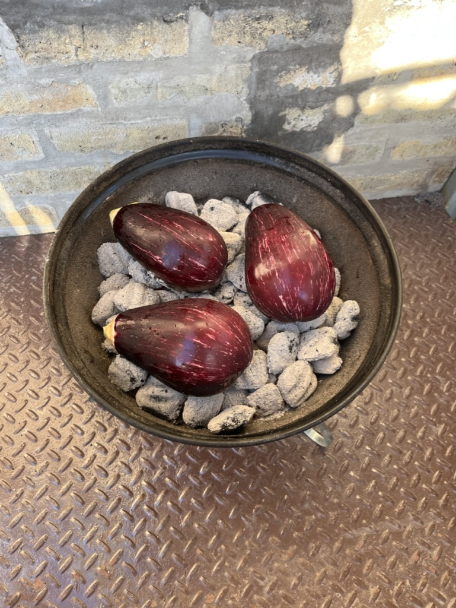

Cooking (and savoring) is pure joy. From sunny picnics with crispy
focaccia to cozy risotto on chilly days, each dish holds its own magic.
And it gets even better when you're the magician.
Here, you'll find my favorite recipes—tried, tested, and heartily
enjoyed. I didn't invent them, but I've crafted and shared them with
love. I hope you'll enjoy the flavors of my life.
Recipes:
Focaccia
Incredibly versatile soft and crunchy focaccia serves as the perfect
accompaniment to any meal.
Toppings (for example, rosemary, garlic & red pepper flakes)
Instructions
In a large mixing bowl, whisk 7g dry yeast with ½ cup warm water.
Let sit for five minutes.
After five minutes add 2 ½ cups of room temperature water, 780g
sifted bread flour and 17g salt. Mix to incorporate the water with
the flour (about five minutes). Cover the bowl with plastic wrap
or a damp, clean kitchen cloth. Let the dough rest for ten
minutes.
After ten minutes, mix / knead until the dough becomes very smooth
and elastic (about 15 minutes with a mixer or 30 minutes if mixing
by hand). Bread is more about feel than time.
After mixing, pour ¼ cup olive oil into the bowl to cover the
entire dough (including the bottom). Cover the bowl again with
plastic wrap or towel, let the dough rest for 1 ½ - 2 hours. Dough
should roughly double in size. Remember, bread is more about feel
than time.
Poke test the dough for readiness. Stick a finger into the dough.
It should not immediately close up and instead roughly maintain
its form.
Oil a baking sheet tray with ¼ cup olive oil. Before transferring
dough to a sheet tray, perform four quarter folds. Then, add dough
to the sheet tray and gently stretch it to fill the tray. Cover
with plastic wrap and let it rest for 10-15 minutes.
Prepare toppings, mix with ¼ cup olive oil. For example, slice
garlic and rosemary and marinate in olive oil with red pepper
flakes.
Remove plastic wrap and finish stretching dough into corners of
sheet tray. Cover again with plastic wrap, let the dough rest in
the refrigerator for 8-12 hours (overnight is great).
After letting the dough rest, prepare for baking. Preheat the oven
to 450 F. Remove dough from fridge, dimple the dough as if playing
the piano to remove air bubbles. Apply toppings. Sprinkle coarse
salt.
After letting the oven preheat for thirty minutes, bake focaccia
on the middle rack for 20 minutes. After twenty minutes, move the
focaccia to the top rack and bake for another five minutes or
until golden.
Remove from the oven, let cool on a wire rack. Enjoy!
Focaccia with Garlic and Rosemary
Mutter Paneer
Quick but luxurious mutter paneer to warm your mind, body and soul.
3 Crunchy Cucumbers, Persian or Japanese (Cut into Matchsticks)
1-2 Avocados (Thinly Sliced)
Salt
Instructions
Heat oven to 425 F. In a saucepan, heat two tablespoons of oil
over medium heat. Stir in garlic until fragrant then add soy
sauce, mirin, sugar, black pepper and bring to a simmer.
Simmer until sauce has reduced by about ⅓ and has thickened (about
15 minutes). Stir in ginger then remove from the heat.
Salt salmon and coat both sides with half of the sauce. Bake in
the oven for five minutes, then baste with sauce. Bake five
minutes longer or until cooked then remove from the oven.
Flake the salmon into bite-sized pieces and drizzle with reserved
sauce.
To build hand rolls, top seaweed with some rice, add cucumbers,
avocado, salmon, and dab of wasabi. Roll into a triangle. Enjoy!
Kelsey, Maimi and Mikey Enjoying Salmon Hand Rolls
Smoky Eggplant Spread
Essentially a delightful eggplant schmear to eat with warm pita
triangles, this smoky eggplant spread its pleasant smoky flavor from
a deliberate charring of the eggplant skin.
Prepare a charcoal grill. Pierce eggplants here and there with a
fork. Place into hot coals, allow skins to blister and char,
turning with tongs until the entire surface is blackened and
eggplants are completely soft. Set aside to cool.
Halve eggplants lengthwise and carefully scrape away flesh.
Discard skin and place flesh into a colander. Salt lightly and
leave for ten minutes. Then, squeeze into a ball to remove liquid.
Blend eggplant, ½ teaspoon salt, tahini, lemon juice, garlic and
cayenne to obtain a creamy puree (alternatively, you can simply
whisk for a more rustic spread). Taste, adjust seasonings to your
preference. Transfer to a shallow serving bowl.
Sprinkle cumin seeds, paprika, parsley, mint and olive oil on top.
Serve with warm pita bread. Enjoy!

Roasting Eggplants in CharcoalSmoky Eggplant Spread with Pita Bread
Mushroom Risotto With Peas
If you are ever at a loss for what to make for an impromptu dinner
party, especially if there will be vegetarians at the table,
consider this luxurious mushroom risotto.
Heat two tablespoons of oil in a pan, add shallots and cook until
just tender (about five minutes).
Turn up heat, add mushrooms. Cook, stirring, until they begin to
sweat then add garlic and thyme / sage. Season with salt and
pepper. Cook until soft.
Add rice and stir until grains begin to crackle. Add wine or sake.
Cook until liquid is no longer visible. Stir in enough stock to
just cover the rice. Cook, stirring vigorously until stock is just
about absorbed. Add another ladle or two of stock and continue
cooking. Repeat this process for about 15 minutes, cooking down
stock then adding more.
Add peas. Keep adding stock and cooking down for another ten
minutes. Rice should be getting tender but still al dente.
Add another ladle or two of stock, stir in parsley and cheese.
Remove from heat. Taste, adjust seasonings to your preference.
Enjoy!